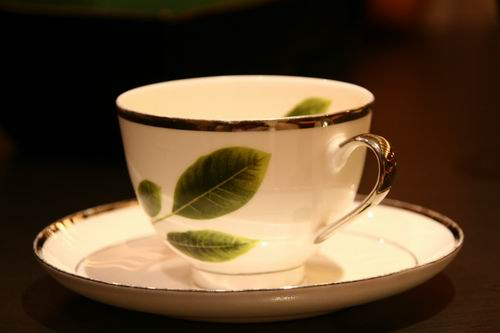

小聚会 @ Aug 07, 2006

shot by Canon eos 350Djiajialing周二回澳大利亚，上星期六晚上在1912老客茶站聚会，7个人4个人手上拿着数码单反相机，镜头各不相同，俨然成了摄影爱好者聚会了。数码单反目前所拍出来的片子没有我期待中的质量，清楚的照片没几张，很容易糊，画质不如F717好。有人说要炼就一双铁手才行。也许在AV、TV模式下需要三脚架，自动模式应该好一些。还有两周就要出发去塞班了，有个先去的同事回来讲那里很不错，吃喝消费不算高，还可以租车租船，他租了辆哈雷式的摩托车，租了条船出海两天......晒得很黑回来了！我开始有点小兴奋，要尽快办张双币信用卡。
4 Responses to “小聚会”
2006-08-08
单反要想不胡很需要三脚架，或者买有反抖功能的镜头，但一般这种镜头都贵。期待你的照片，我一再在考虑nikkon d50,还是canon 350d.
2006-08-08
不斗的话，可以把ISO开到1600，光圈放在最大，这样一般就不会抖，如果还抖，那就是室内太暗了，或者手捧不稳。
一般DC会比单反抖的厉害，因为没有高ISO和大光圈。
2006-08-08
男士适合NIKON D50，手握的面积大一些。CANON EOS 350D较适合女性用，比较小。那天聚会，男生们拿着我的机器都说小、小了点...手抓不住。当时三个男士均用的是NIKON D50。
我看到CANON IS镜头（防抖）的小册子，估计买全长焦、定焦和广角镜头要准备好几万人民币，还有个微距镜头，简直太那个贵了！
我当时买的CANON EOS 350D套机，6200多，接着买个SIGMA 17~200MM的镜头，CNY2700.00，可谓一镜走天下，加了些CF卡、滤光镜等等小配件，到目前超一万了，这也是最便宜的镜头了。
2006-08-09
欢迎海归！
Leave A Reply
存档只读，评论已关闭。